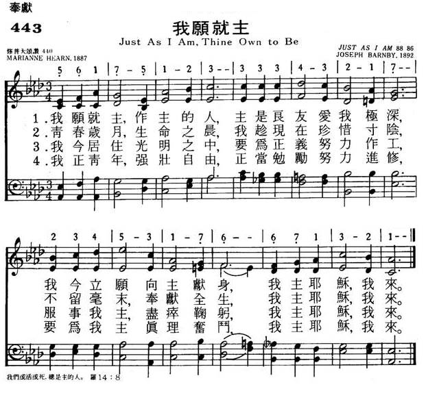

|
|
颂主新歌 |
|
1 Just as I am, Thine own to be, 2 In the glad morning of my day, 3 I would live ever in the light, 4 Just as I am, young, strong, and free, Amen. |
|
|
https://www.mred365.cn/szxg/7446.html 
|
|
|
|
|


188 Just As I Am, Thine Own to Be https://youtu.be/u0Ax_CRi1cQ - Just As I Am, Thine Own to Be (Dunstan)
https://youtu.be/Kc0z1gCimCY
| Text: | Just as I Am, Thine Own to Be |
| Author: | Marianne Hearn |
| Tune: | JUST AS I AM |
| Composer: | Joseph Barnby |
| Short Name: | Marianne Farningham |
| Full Name: | Farningham, Marianne, 1834-1909 |
| Birth Year: | 1834 |
| Death Year: | 1909 |
Pseudonym, real name Marianne Hearn.
===========================================
Hearn, Marianne,
known to the public
only by her nom deplume of Marianne Farningham, was born at Farningham, in
Kent, Dec. 17, 1834. She resided for short periods at Bristol and Gravesend,
and since 1865 at Northampton. Miss Farningham is a member of the Baptist
denomination. Her literary work has been done chiefly in connection with the Christian
World newspaper, on the staff of which she has been from
its first publication. She is also editor of the Sunday
School Times. Most of her contributions to the Christian
World have been republished in book form, and include:—
(1) Lays and Lyrics of the Blessed Life, 1861. (2) Poems,
1865. (3) Morning and Evening Hymns for the Week,
1870. (4) Songs of Sunshine, 1878.
From these works the following hymns have passed into common use:—
1. Father Who givest us now the New Year. Old
and New Year. From her Songs of Sunshine, 1878.
2. Hail the children's festal day. Sunday
School Anniversaries. Appeared in the Sunday School
Times, 1875.
3. Let the children come, Christ said. Christ's
invitation of children. In G. Barrett's Book of Praise
for Children, 1881. It was written in 1877.
4. When mysterious whispers are floating about. Death
anticipated. Appeared in the Christian World, in
the Autumn of 1864; and again in her work, Poems,
1865. In I. D. Sankey's Sacred Songs & Solos, it is
entitled "Waiting and Watching for me" (the refrain of each stanza), and is
altered to "When my final farewell lo the world I have said." This is the
most popular of Miss Hearn's hymns. [Rev. W. R. Stevenson, M.A.]
-- John Julian, Dictionary of Hymnology
Tune Information
| Title: | JUST AS I AM (Barnby) |
| Composer: | Joseph Barnby (1883) |
| Meter: | 8.8.8.6.8.6 |
| Incipit: | 56175 12333 34321 |
| Key: | A♭ Major |
| Copyright: | Public Domain |
第188首 榮歸天鄉 Just As I Am, Thine Own to Be
文／讚美詩源考小組策劃 丁春芳撰稿
Just As I Am, Thine Own to Be
Marianne Hearn, St. 1 To 4(1834-1909)
Godfrey Thring, St. 5 To 8(1823-1903)
原詩作詞者為馬麗安．赫恩（Marianne Hearn, 1834-1909），英國人，因住在格蘭中部北安普敦的Farningham，所以她的著作中也常以Marianne
Farningham為其筆名。她曾任Christian World報社主編，
也負責編輯Sunday School Times此刊物。
這首詩原有六節，1887年發表於主日學協會的The Voice of Praise詩集中。但輯錄成詩歌後，僅取其前四節，後有加入崔應（Godfrey
Thring, 1823-1903）所寫的另外四節詩詞。崔應為英國名牧，致力於聖詩創作，The Church of England Hymn
Book（1882）是其最著名的詩歌集。
作曲者約瑟夫．班比（Joseph Barnby,1838-1896）是十九世紀英國著名的聖樂作曲家，歷任許多大教堂管風琴師及詩班指揮，他所訓練的詩班，都成為倫敦最好的詩班。為了使英國人能欣賞巴哈的音樂，自1871年起，每年他指揮詩班及管弦樂隊，演唱巴哈的受難聖曲。班比在1875-1892年間，出任音樂學院教授及院長，並主辦多次出色的音樂節。1892年，他獲英國維多利亞女王頒賜爵士銜。除聖詩、聖曲外，他編纂了五部聖詩集及聖詩史考。班比於1893年作此曲。
DUNSTAN，8.8.8.6
Joseph Barnby, 1838-1896
讚美詩源考
本詩中、英文歌詞大異其趣，看似獨立歌詞，但中文的歌詞卻是完全呼應了英文歌詞的意境。
英文歌詞寫作源於《羅馬書》十二章1節：「所以，弟兄們，我以神的慈悲勸你們，將身體獻上，當作活祭，是聖潔的，是神所喜悅的；你們如此事奉乃是理所當然的。」詩詞的意境環繞於此，而中文歌詞，雖未意譯原詩精神，但以聖經中的偉人──但以理三位朋友、但以理、以利亞、耶穌的信
心交託，來實踐原詩的精神。恰如《希伯來書》十一章39-40節所說：「這些人都是因信得了美好的證據，卻仍未得著所應許的；因為神給我們預備了更美的事，叫他們若不與我們同得，就不能完全。」
註：曲調名── D U N S T A N，為記念 S t . Dunstan。
Dunstan是在英國很受歡迎的聖者，被譽為復興英格蘭修院運動的要角，他也是一位著名的音樂家、豎琴演奏家及讚美詩創作者。
https://joy.org.tw/file/holyspirit/404/201105-404-79.pdf